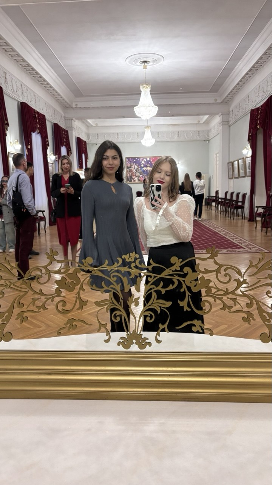
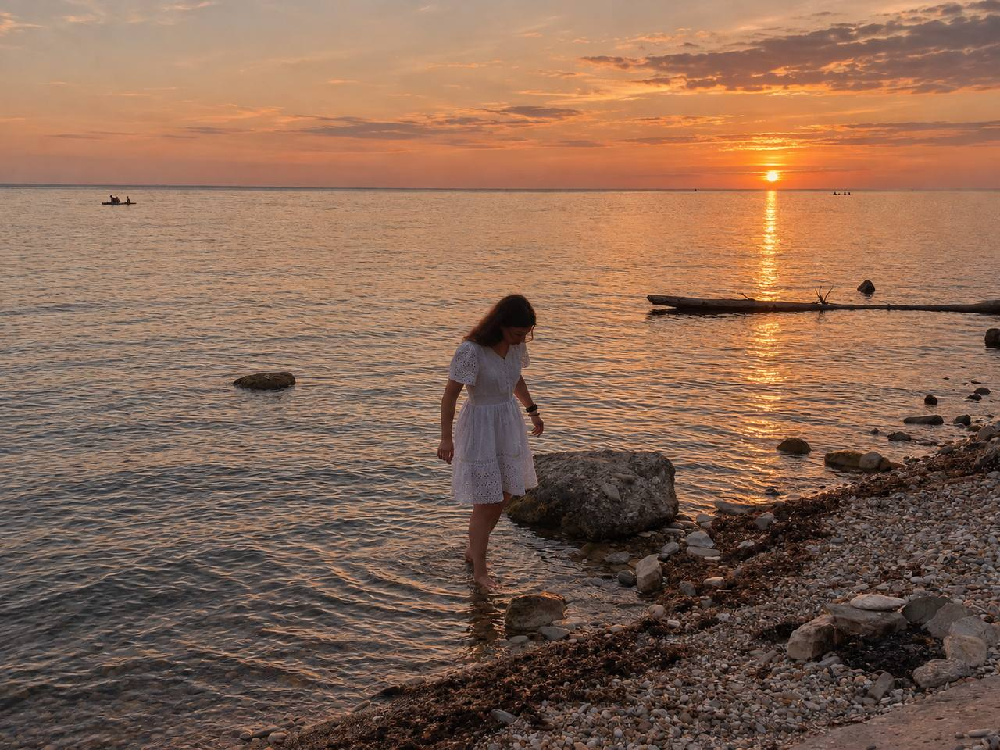
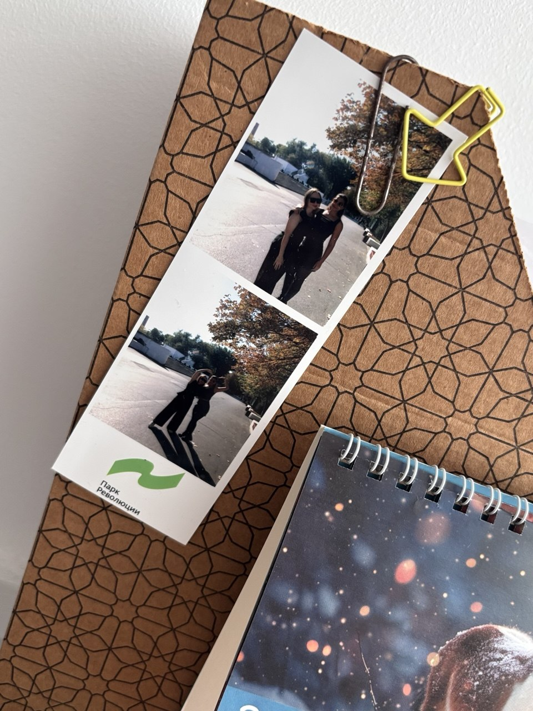

СИЛА ВОЛИ
Способность прийти на тренировку даже после фразы «сегодня точно отдыхаю».
секретное досье · выпуск ограниченный
22 года. Характер - коллекционный.
Обаяние - вне закона. Потенциал - без ограничений.
В этом деле собраны факты, улики, прогнозы и свидетельства людей, которым посчастливилось оказаться рядом с именинницей.
Обладает способностью появляться в нужный момент, превращать обычный день в историю и оставлять после себя впечатление, которое сложно забыть.
Официальный статус. Неоспоримый авторитет. Внутренний запас энергии, который не всегда объясняется законами физики.

«Свидетельство хорошего вечера» «Материал не подлежит разглашению»
«Материал не подлежит разглашению»

«Так начиналась легенда»
«Ещё одно доказательство»Объект наблюдения замечен в районе тренажёрного зала. Уровень решимости высокий. Отношение к слабым гантелям - пренебрежительное.
Способность прийти на тренировку даже после фразы «сегодня точно отдыхаю».
Выдерживает подходы, жизненные повороты и разговоры, которые могли бы закончиться сообщением «понятно».
С каждым годом становиться увереннее, сильнее и ближе к тому, чего действительно хочется.
Выбери одну карту. Расклад исключительно шуточный, но мы оставляем за собой право считать его подозрительно точным.
Три вопроса отделяют обычных людей от Полины Валерьевны. Результат будет внесён в материалы дела.
Все проверки пройдены. Имениннице присваивается звание главной героини нового сезона.
Дорогая Полина Валерьевна!
С днём рождения и с твоими прекрасными 22 годами! Желаем, чтобы новый год жизни оказался щедрым на счастливые совпадения, большие возможности, поездки, смех и людей, рядом с которыми можно быть настоящей.
Пусть в зале покоряются новые вершины, в голове всегда будет ясность, а внутри - силы идти к тому, что важно именно тебе. Желаем уверенности, здоровья, вдохновения и денег на все планы, включая те, о которых пока знаешь только ты.
Отдельный прогноз от соседок: в личной жизни ожидается появление достойного мужчины. Возраст - без разницы в двадцать лет, характер - без загадок похуже таро, намерения - ясные. Кандидаты с формулировкой «я сам не знаю, чего хочу» будут отправлены обратно в колоду.
Оставайся яркой, сильной, смешной и удивительной. Пусть впереди будет много историй, которые мы однажды будем вспоминать со словами: «А помнишь?..»
С любовью и уважением,
твои соседки.